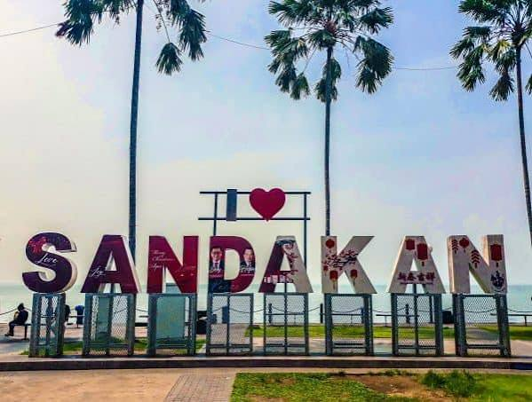

Welcome to Sandakan!
I lived and grew up in Sandakan, a beautiful town located in Sabah, Malaysia. It is known for its natural beauty, wildlife, historical places and delicious local food. Sandakan is also known as the gateway to some of Sabah's famous wildlife attractions.
Interesting Places in Sandakan

Sandakan Town
Sandakan offers beautiful coastal scenery and a unique local atmosphere.
Sepilok Orangutan Rehabilitation Centre
A famous wildlife centre dedicated to rehabilitating orphaned and injured orangutans.

Labuk Bay Proboscis Monkey Sanctuary
A sanctuary where visitors can observe proboscis monkeys in their natural habitat.
Local Food
Sandakan offers a variety of delicious food influenced by its multicultural community. Recently, Malatang has become one of the popular food choices in Sandakan, attracting the attention of many locals and visitors.

Malatang
Malatang is a popular Chinese-style spicy hot pot dish where customers can choose their favourite ingredients, vegetables, noodles and soup base. It is a delicious food choice for spicy food lovers!